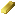
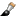
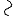

Paint für ReactOS stellt ihnen zum Bearbeiten ihrer Bilder zahlreiche Werkzeuge zur Verfügung. Um eines der Werkzeuge auszuwählen, klicken Sie bitte auf das entsprechende Symbol im Werkzeugkasten, der sich üblicherweise auf der linken Seite des Fensters befindet. Es folgt eine Auflistung der Ihnen zur Verfügung stehenden Werkzeuge mit jeweils einer kurzen Beschreibung.
| Werkzeug | Beschreibung |
|---|---|
| Die freie Auswahl ermöglicht es Ihnen, einen beliebigen Bereich des Bildes auszuwählen. Drücken Sie dazu im Bild die linke Maustaste und umfahren Sie mit der gedrückten Maustaste den Bereich, den Sie auswählen möchten. Wenn Sie die Maustaste nun loslassen wird der Bereich automatisch in eine geschlossene Auswahl umgewandelt. | |
| Die rechteckige Auswahl ermöglicht es Ihnen, im Bild einen beliebigen rechteckigen Bereich auszuwählen. Drücken Sie dazu im Bild die linke Maustaste und ziehen Sie die Maus zur diagonal gegenüberliegenden Seite des gewünschten Rechtecks. Wenn Sie die Maustaste loslassen, erscheint sie soeben erstellte Auswahl. | |
|  | Der Radierer erlaubt es Ihnen, mit der Hintergrundfarbe zu Malen, um Teile des Bildes zu löschen. Möchten Sie das gesamte Bild löschen, verwenden Sie bitte den Menüeintrag Bild löschen im Menü Bild.* |
| Mit dem Füllwerkzeug können Sie einfarbige Flächen einfärben. Klicken Sie dazu an eine beliebige Stelle in der Fläche.* | |
| Die Pipette lässt Sie die Farbe an einer bestimmten Position im Bild aufnehmen. Klicken Sie dazu an die Stelle im Bild. Wenn Sie die Maustaste loslassen, wird die aktuelle Vorder-/Hintergrundfarbe auf die Farbe des angeklickten Pixels gesetzt.* | |
| Mit dem Vergrößerungswerkzeug können Sie die Ansicht des Bildes vergrößern (Linksklick) und verkleinern (Rechtsklick). | |
| Der Stift zeichnet einen dünnen Strich entlang der Linie, die Sie bei gedrückter Maustaste mit der Maus fahren. Mit der jeweils anderen Maustaste können Sie den Zeichenvorgang jederzeit Abbrechen und das Bild zurücksetzen.* | |
|  | Der Pinsel erweitert den Stift um die Möglichkeit, Zeichendicke und Zeichenform auszuwählen. Nähere Informationen hierzu entnehmen Sie bitte dem Kapitel Werkzeugeinstellungen.* |
| Die Sprühdose kann verwendet werden, um weit gestreute Linien zu zeichnen. Die Dichte der Linie ist dabei von der Geschwindigkeit abhängig mit der Sie die Maus bewegen.* | |
| Textwerkzeug | |
| Eine gerade Linie zeichnen Sie, indem Sie zunächst die linke Maustaste drücken, mit gedrückter Maustaste zum Zielpunkt fahren und dort die Maustaste wieder loslassen.* | |
|  | Bezier-Kurve* |
| Um ein Rechteck zu zeichnen, Drücken Sie die linke Maustaste. Fahren Sie mit der Maus bei gedrückter Maustaste in die diagonal gegenüberliegende Ecke und lassen Sie die Maustaste los.* | |
| Polygon* | |
| Eine Ellipse zeichnen Sie, indem Sie mit der Maus, wie unter Rechteck beschrieben, die Diagonale des Außenrechtecks der Ellipse ziehen.* | |
|
Das abgerundete Rechteck verhält sich wie das Rechteck. Sie ziehen mit der Maus die Diagonale des Rechtecks, das Sie zeichnen möchten.* |
* Dieses Wekzeug kann auch mit der rechten Maustaste verwendet werden. Vorder- und Hintergrundfarbe werden in diesem Fall vertauscht verwendet.
Viele Werkzeuge erlauben daruber hinaus weitere Einstellungen. Eine Liste dieser Einstellungsmöglichkeiten entnehmen Sie bitte dem Kapitel Werkzeugeinstellungen.